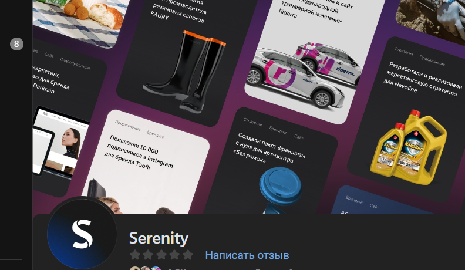
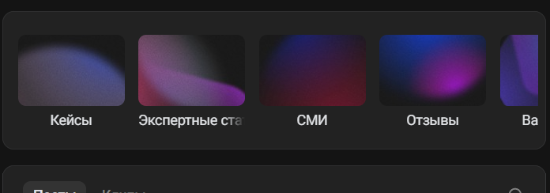
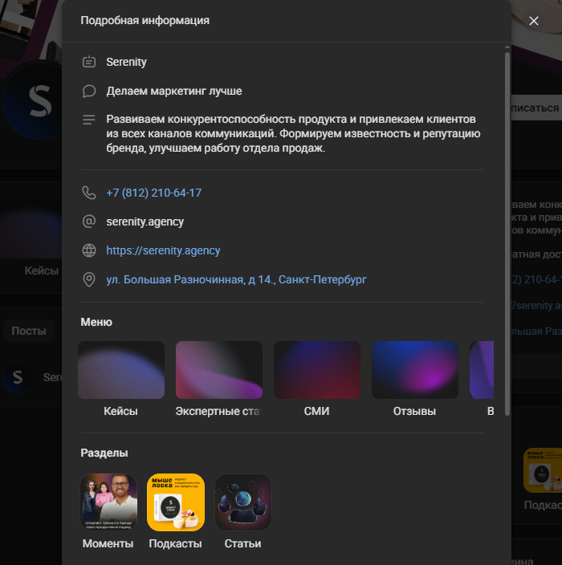
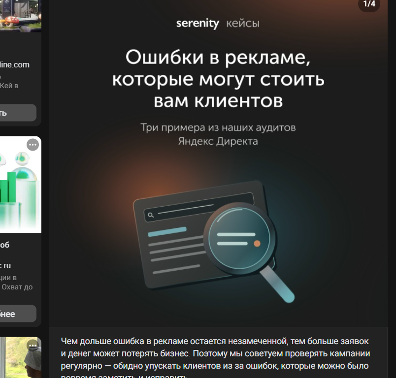
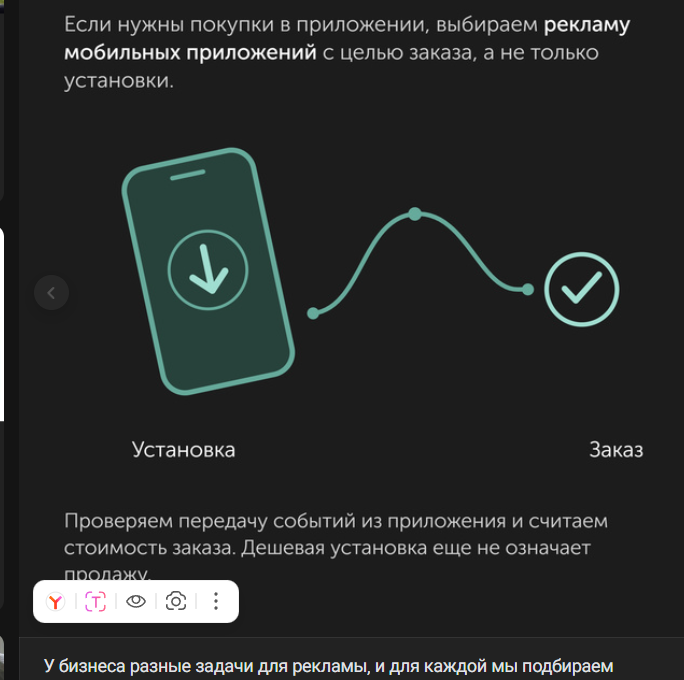
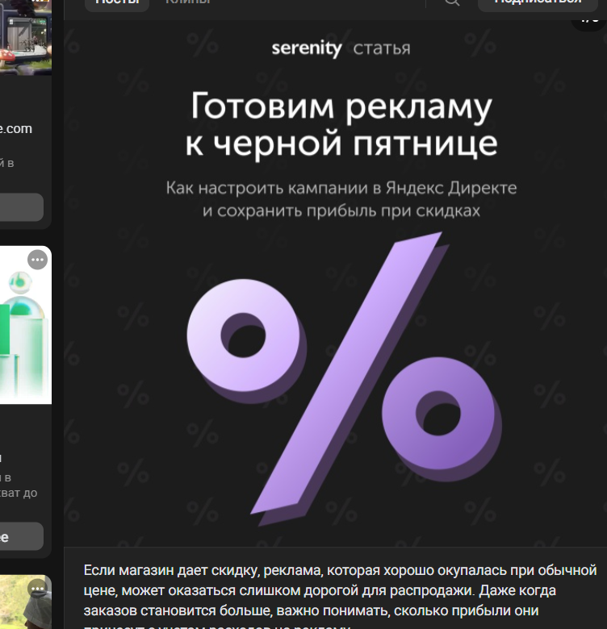
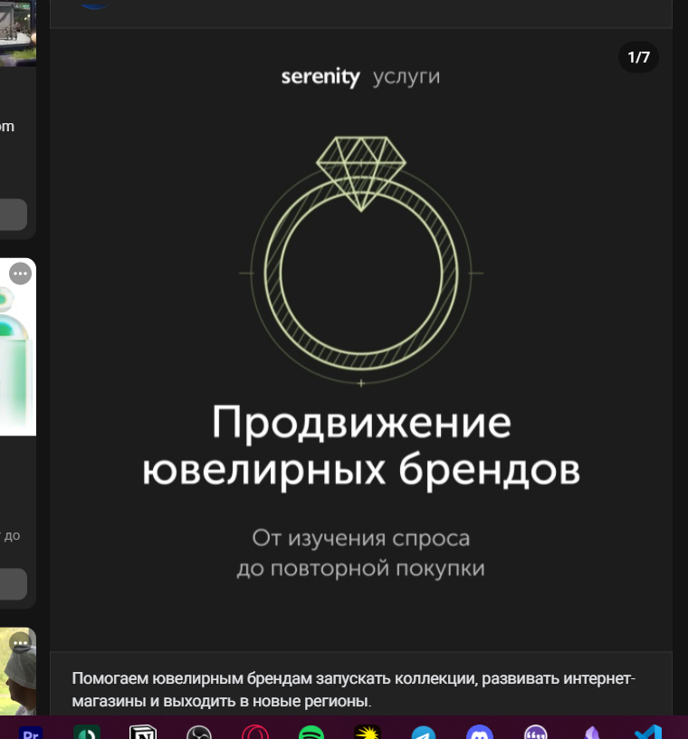
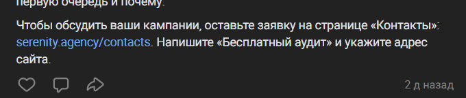

Добавить короткие клипы
Развивать лёгкие форматы вокруг полезных советов, актуальных трендов и юмора. Это дополнит экспертные публикации более живым и быстрым способом подачи.
Serenity · ВКонтакте
Первое впечатление складывается ещё до просмотра публикаций. Здесь важно быстро объяснить, чем занимается Serenity, кому подходит предложение и что сделать дальше.
Первое впечатление
Коллаж работ выглядит эффектно и задаёт визуальный характер сообщества. Но с первого взгляда не вполне понятно, в чём специализация Serenity и что именно здесь предлагают.

Что уже работает
Разделы сообщества оформлены в единой визуальной системе: общая палитра, цветовые акценты и подписи помогают воспринимать их как части одного бренда.

Описание и действие
«Делаем маркетинг лучше» — короткая и броская фраза. Я бы её сохранила, а описание под ней упростила: сейчас в одном тексте соединены несколько больших обещаний и профессиональных формулировок.

Контент и путь к заявке
В присланных примерах есть кейсы, практические советы, сезонный материал и публикация об услуге. Контент не сводится к одному формату: он показывает экспертизу и подводит к следующему шагу.




Подача кейсов
В кейсах есть конкретная проблема, разбор и решение. В присланных карточках почти всё пространство занимает сплошной текст, поэтому карусель читается как длинный пост, разбитый на слайды, и глазу не за что зацепиться.
Оставлять в каждой карточке одну главную мысль, а ключевые этапы и факты показывать схемой, инфографикой, иллюстрацией или акцентом на важной цифре. Если текста всё ещё много — сокращать его и распределять между большим числом слайдов.
В одном из продающих постов есть конкретный призыв: оставить заявку на странице «Контакты», написать «Бесплатный аудит» и указать адрес сайта. Это связывает содержание поста с понятным действием.
Страница контактов Serenity
Развивать лёгкие форматы вокруг полезных советов, актуальных трендов и юмора. Это дополнит экспертные публикации более живым и быстрым способом подачи.
Добавить больше репутационного контента: знакомить с командой, показывать рабочие процессы и публиковать отзывы клиентов. Раздел «Отзывы» уже заметен в меню — его можно поддерживать материалами и в ленте.
Рекомендация
Я бы оставила портфолио-коллаж, но усилила его коротким объяснением предложения. Название, описание и призыв должны дополнять друг друга.
Добавить к Serenity короткий тематический дескриптор с ключевыми словами, которыми аудитория ищет сообщества в этой сфере. Конкретные формулировки стоит сверить с запросами целевой аудитории.
Переписать длинное описание простыми словами: кому помогает Serenity, какую задачу решает и в чём её отличие. Оставить одну главную ценность вместо нескольких широких обещаний.
В одном из продающих постов уже указан конкретный бесплатный шаг — заявка на странице контактов с пометкой «Бесплатный аудит» и адресом сайта. Использовать этот ясный сценарий и в других продающих публикациях.
Критерий ясности: с первого экрана посетитель понимает, чем занимается Serenity, кому адресовано предложение и что сделать дальше.
Бонус · другие площадки
В дополнительной проверке Telegram и сайта нашлось расхождение в формулировках об опыте агентства и размере команды.
20 лет опыта
100+ профессионалов
21 год
30+ профессионалов
Что стоит уточнить: актуальны ли обе версии и описывают ли цифры разные критерии. После сверки использовать согласованные формулировки во ВКонтакте, Telegram и на сайте; если показатели разные — коротко пояснить это.
Публичные материалы проверены 26 ноября 2026 года.